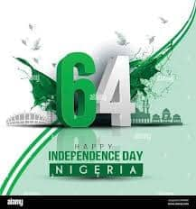

Ranar 'Yancin Kai ta Kasa a Yola
Murnar 'Yancin Najeriya da Haɗin Kai
Mayar da Hankali: Tunawa da samun 'yancin Najeriya tare da nuna al'adu, gangami, da bukukuwa a Yola.
Gajeren Bayani na Taro
A Yola ana murnar Ranar 'Yancin Kai da babban ƙwarin gwiwa, tare da ayyuka daban-daban da ke nuna arzikin al'adun Najeriya da ƙarfafa haɗin ƙasa.

Ayyukan Bikin
- Gagarumar Daga Tutar: Harkokin hukuma na buɗewa
- Gangamin Sojoji: Nunin rundunar tsaro
- Nune-nunen Al'adu: Raye-raye na gargajiya
- Wasannin Jama'a: Gasa da wasanni tsakanin al'umma
- Sarakunan Kiɗa: Jawaban mawaka na gida
Abubuwan Da Ke Taimakawa Taro
- Jawabin Gwamna
- Bada lambobin yabo
- Taron makarantu da tsayawa
- Nune-nunen al'adu
- Shagunan abinci na gargajiya
Ayyuka a Wurin
- Mahmud Ribadu Square:
- Main wurin gangami
- Nune-nunen al'adu
- Harkokin hukuma
- Cibiyoyin Al'umma:
- Bukukuwan gida
- Shirye-shiryen matasa
- Nunin nishaɗi
Tasirin a Al'umma
- Ƙarfafa haɗin ƙasa
- Kare al'adu
- Shigar matasa cikin ayyuka
- Haɗa zumunci a al'umma
- Dama ga tattalin arziki